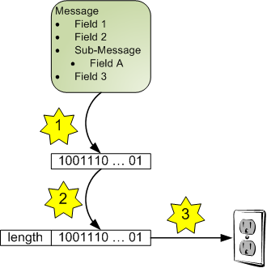

I personally find Google's protocol buffers library (protobuf) extremely convenient for efficient serialization and de-serialization of structured data from multiple programming languages. protobufs are perfect for TCP/IP links in general and socket-based IPC in particular.
Framing (the method of dividing a long stream of bytes into discrete messages) isn't immediately obvious with protobuf. What you get from a protobuf serialization is a binary buffer of data. You almost certainly want to send more than one such buffer over time, so how does your peer know when one message ends and another starts?
I've seen opinions online that failing to specify this is a shortcoming of protobuf. I disagree. The official protobuf documentation clearly mentions this issue, saying:
[...] If you want to write multiple messages to a single file or stream, it is up to you to keep track of where one message ends and the next begins. The Protocol Buffer wire format is not self-delimiting, so protocol buffer parsers cannot determine where a message ends on their own. The easiest way to solve this problem is to write the size of each message before you write the message itself. When you read the messages back in, you read the size, then read the bytes into a separate buffer, then parse from that buffer. [...]
This technique is called length-prefix framing. It's efficient in both space and time, and is trivial to understand and implement as I hope to show in this article.
Let's start with a diagram that demonstrates how a message goes from being created to being sent into a TCP/IP socket:
We have a protobuf message filled in with data [1] The steps are:
- Serialization: protobuf handles this for us, converting the message into binary data (essentially a string of byte values).
- Framing: the length of the serialized string of data is known. This length is packed into a fixed encoding and is prepended to the serialized data.
- Sending: the combined length + data are sent into the socket.
This is neither a protobuf nor socket tutorial, so I'll just focus on step 2 here. What does "length is packed into a fixed encoding" mean?
The length is just an integer of a finite size. Suppose for the sake of discussion we won't be sending messages larger than 4 GiB in size [2]. Then all message sizes fit into 4 bytes. We still have to decide which byte gets sent first. Let's use the high byte first (also known as big-endian), to be true to the network byte order.
What about the receiver? How does one receive full messages with the scheme described above. Very simply - just follow the steps in reverse [3]:
- First receive the length. Since it's fixed size we know how many bytes we need to take off the wire. Using the example encoding described above, we receive 4 bytes and assuming they represent a 32-bit integer in big-endian order, decode them to get the length.
- Receive exactly length bytes - this is the serialized data.
- Use protobuf's de-serialization services to convert the serialized data into a message.
That's about it - we have a fully specified protocol. Given an initial state in which no data has yet been exchanged, we can send and receive arbitrary amounts of messages between peers, safely and conveniently.
To make this even clearer, I will now present some Python code that implements this protocol. Here's how we send a message:
def send_message(sock, message):
""" Send a serialized message (protobuf Message interface)
to a socket, prepended by its length packed in 4
bytes (big endian).
"""
s = message.SerializeToString()
packed_len = struct.pack('>L', len(s))
sock.sendall(packed_len + s)
The three lines that constitute this function are exactly the three protocol steps outlined in the diagram: serialize, pack, send. There really isn't more to it.
Receiving is just a tad more complicated:
def get_message(sock, msgtype):
""" Read a message from a socket. msgtype is a subclass of
of protobuf Message.
"""
len_buf = socket_read_n(sock, 4)
msg_len = struct.unpack('>L', len_buf)[0]
msg_buf = socket_read_n(sock, msg_len)
msg = msgtype()
msg.ParseFromString(msg_buf)
return msg
Since only the user of get_message knows the actual type of the protobuf message, it (the class) is passed as the msgtype argument [4]. We also use a utility function for reading an exact amount of data from a socket. Here it is:
def socket_read_n(sock, n):
""" Read exactly n bytes from the socket.
Raise RuntimeError if the connection closed before
n bytes were read.
"""
buf = ''
while n > 0:
data = sock.recv(n)
if data == '':
raise RuntimeError('unexpected connection close')
buf += data
n -= len(data)
return buf
Sure, Python has its cute way of making everything look short and simple, but I've also implemented similar code in C++ and Java, and it's not much longer or more complicated there. While I ignored efficiency here (freely copying buffers, which may be large), the protobuf API actually provides all the means necessary to write copy-free code, if you're concerned about runtime. In this article my optimization was for simplicity and clarity.

| [1] | protobuf messages can describe arbitrary structured data relatively easily, but this is a topic for another day. |
| [2] | If this is too restrictive for you, you should really re-consider your protocol. Also keep in mind that protobuf is not recommended for messages larger than 1 MiB or so anyway. |
| [3] | Note how prepending (rather than appending) the length to the message paid off here - the receiver first receives the length, which allows him to know how long a message to expect. |
| [4] | If you're used to less dynamic languages where classes aren't usually passed around into functions and this piece of Python hackery confuses you, feel free to ignore it. I included it just for symmetry - send_message takes a message, so I wanted get_message to return the message. We can make it simpler by just returning msg_buf - the ParseFromString call can be done outside. |